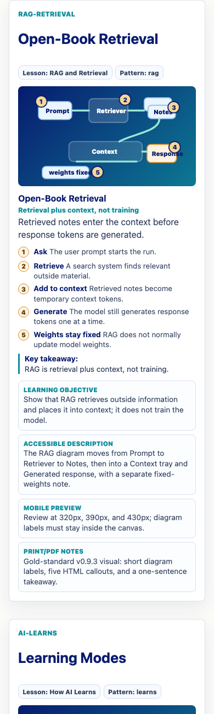
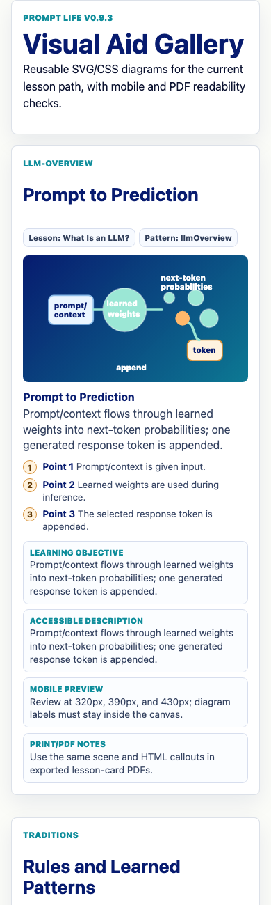
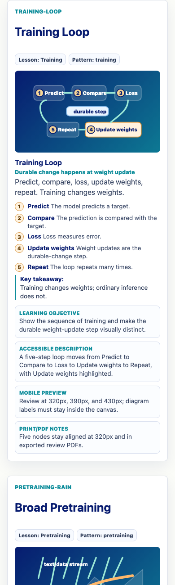
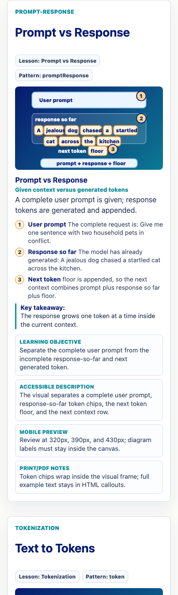
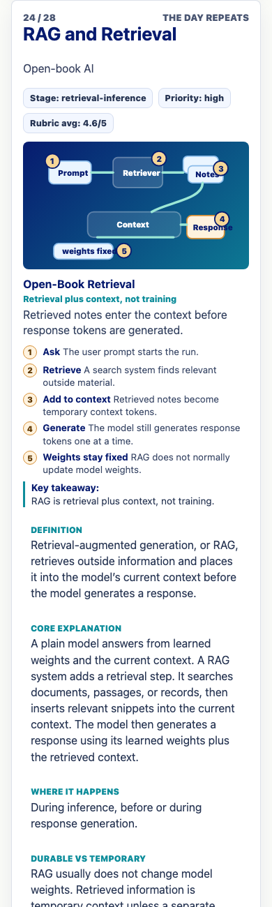

Prompt Life v0.9.3
Visual System Reset Report
This pass creates a stricter visual-aid pattern and rebuilds RAG and Retrieval as the gold-standard Open-Book Retrieval visual. It does not start Batch 3, add games, or add 3D libraries.
What Changed
- Added the visual pattern:
VisualAidCard,DiagramScene,CalloutList, andKeyTakeaway. - Added learning objective, accessible description, key takeaway, and print/PDF notes to visual metadata.
- Rebuilt RAG as a four-zone diagram: Prompt, Retriever, Notes, Context, Response, plus fixed weights.
- Completed RAG lesson fields for durable-vs-temporary, prompt-vs-response, core explanation, misconceptions, and feedback.
- Improved the visual gallery so review cards show visual id, lesson, scene, callouts, accessible description, mobile preview, and print/PDF notes.
- Updated
Open Book or Learned?with the requested RAG sorting items. - Bumped the visible app version to
v0.9.3and updated export filenames.
RAG Finding
RAG was current in the repo but visually unrepaired. The source already had the rag-retrieval Journey card, but it still used an older mini-infographic visual and thinner lesson fields because v0.9.2 focused mostly on Batch 1 and Batch 2 visuals.
Files Changed
README.md,package.json, andscripts/export-lesson-pdf.mjssrc/components/VisualAids.tsxsrc/data/content.ts,src/data/contentReview.js, andsrc/data/exercises.tssrc/main.tsxandsrc/styles/global.cssdocs/REVIEW_NOTES.md- v0.9.3 curriculum docs, PDFs, screenshots, and this report
Verification
npm install: passed, 0 vulnerabilities.npm run typecheck: passed.npm run build: passed.npm run build:pages: passed.npm run export:lesson-pdf: passed.npm run export:lesson-cards: passed.- In-app browser QA confirmed the RAG visual and completed RAG fields.
- 320px, 390px, and 430px checks showed no horizontal overflow for RAG, Training Loop, Prompt vs Response, visual gallery, or the RAG lesson-card sample.
Screenshots





Known Remaining Issues
- Some older visuals outside the named repair targets still use the legacy metadata fallback and should be converted gradually.
- Source citations are still needed before publication-final claims about RAG and transformer internals.
- Real iPhone Safari testing remains the final check after GitHub Pages deploy, especially for browser cache and safe-area behavior.
Ready For Batch 3?
Yes for visual-system foundation after final deploy verification. Batch 3 should use the RAG pattern as the model: one objective, simple scene, numbered HTML callouts, key takeaway, and accessible description.
Next Three Steps
- Build Batch 3 for Attention, MLP, Layers, and Hidden States using this stricter visual pattern.
- Add source citations or bibliography notes for RAG and transformer internals.
- Convert remaining legacy visuals to the card/scene/callout/takeaway pattern over time.
How To Run
cd ~/Desktop/promptlifenpm installnpm run dev- Open
http://localhost:5173/. - For iPhone testing after deploy, open
https://kevinhegg.github.io/promptlife/?v=093or confirm the Badge page showsv0.9.3.